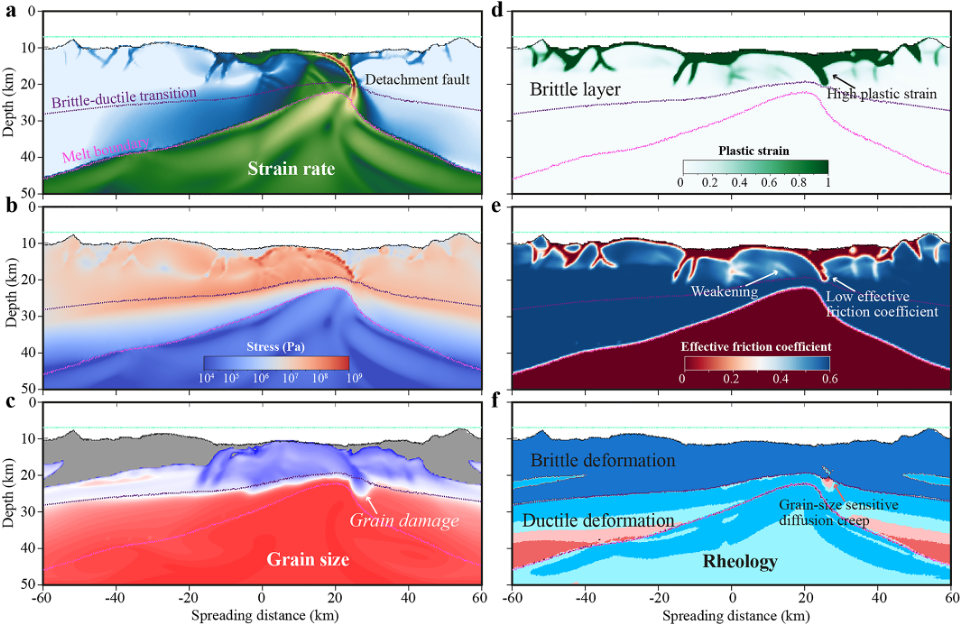
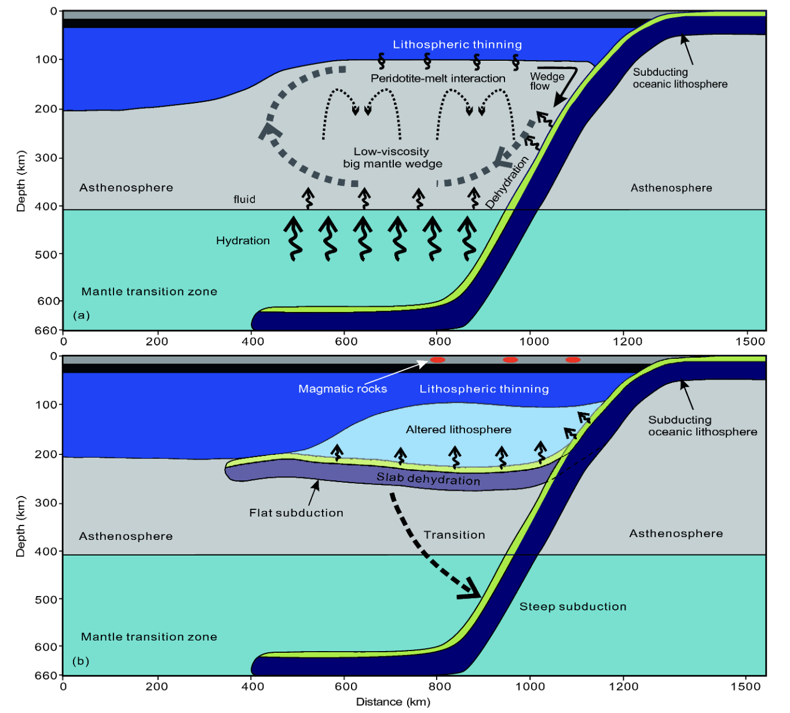
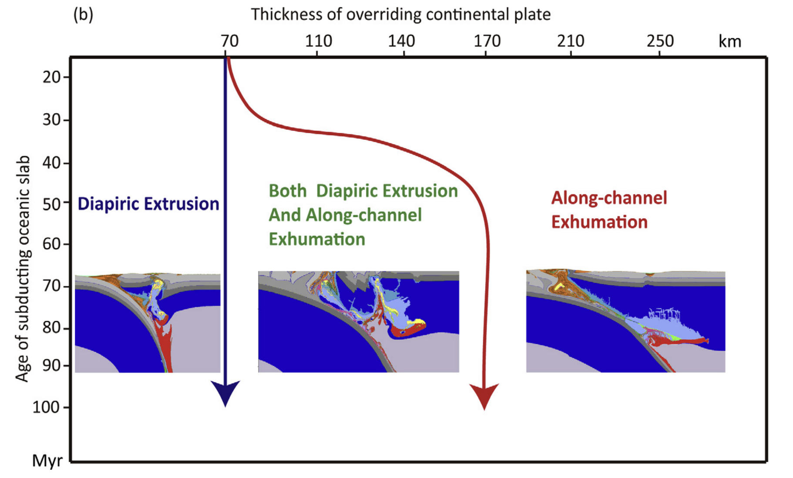

Talks
Publications
Home
Mingqi Liu
Postdoctoral Scholar
University of
Southern California
ml_013@usc.edu
Selected publications
[
Google Scholar
]

Tectonics
The Effect of Brittle-Ductile Weakening on the Formation of Faulting Patterns at Mid-Ocean Ridges
Mingqi Liu*, Taras Gerya, Antoine Rozel
Tectonics, 2025
JGR - Solid Earth
Forced Subduction Initiation Near Spreading Centers: Effects of Brittle-Ductile Damage
Mingqi Liu*, Taras Gerya
JGR - Solid Earth, 2023
EPSL
Self-organization of magma supply controls crustal thickness variation and tectonic pattern along melt-poor mid-ocean ridges
Mingqi Liu*, Taras Gerya, Antoine Billy Rozel
Earth and Planetary Science Letters, 2022
NC
Low-degree mantle melting controls the deep seismicity and explosive volcanism of the Gakkel Ridge
Ivan Koulakov, Vera Schlindwein, Mingqi Liu, Taras Gerya, Andrey Jakovlev, Aleksey Ivanov
Nature Communications, 2022
NC
Vertical tearing of subducting plates controlled by geometry and rheology of oceanic plates
Yaguang Chen, Hanlin Chen*, Mingqi Liu*, Taras Gerya*
Nature Communications, 2023

SCES
Dynamics of thinning and destruction of the continental cratonic lithosphere: Numerical modeling
Mingqi Liu, Zhonghai Li
Science China Earth Sciences, 2018

JAES
Diapir versus along-channel ascent of crustal material during plate convergence: Constrained by the thermal structure of subduction zones
Ming-Qi Liu, Zhong-Hai Li, Shao-Hua Yang
Journal of Asian Earth Sciences, 2017